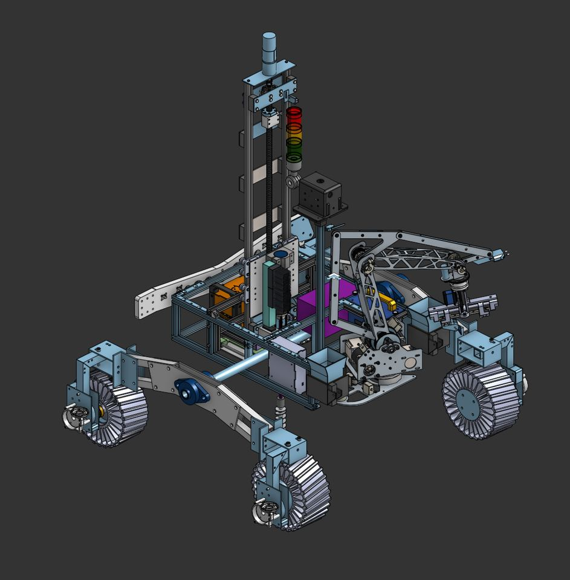
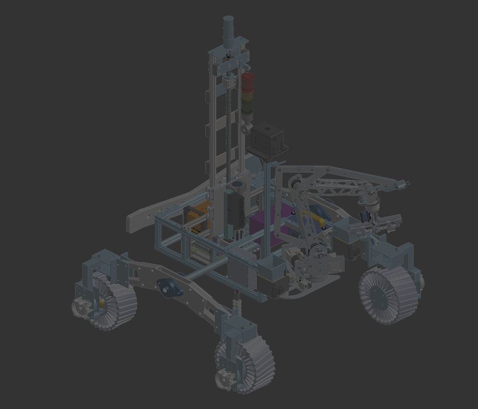
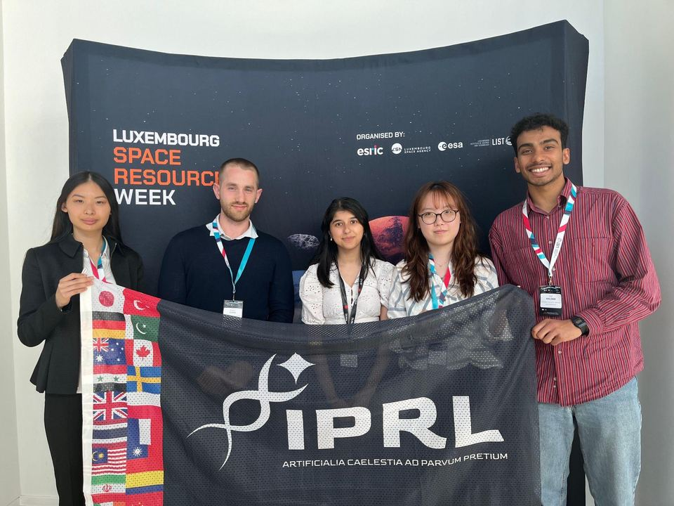

Imperial Planetary Robotics Lab
Run with the Imperial College Robotics Society (ICRS)
IPRL's mission is to "give students the space to gain experience in space robotics". That means rovers, drones, maybe robot swarms one day. There are three branches right now:
- Harbinger, the rover team for the European Rover Challenge
- Triton, the research branch
- Alumni Project, for ex-IPRL people who want to keep building
European Rover Challenge
ERC is held in Poland every year. Last year we came 16th out of 100+ teams registered worldwide. This year we want to rebuild the arm, get autonomous driving working and get into the top 10. The competition is in Kraków.
The tasks: maintenance (flipping switches and plugging cables with the arm), probing (picking up a probe and dropping it in the payload), navigation (autonomous drone + rover), science (drilling and sampling, astrobiology) and a presentation.




Rover sub-teams: electronics, drive/chassis/suspension, robotic arm, drill and payload, science, UAV. We're looking for people who can commit 4-8 hours a week.
Triton (research)
Term 1 is an intro to planetary research with three small projects (sample collection on Mars, Venus geology, lunar water for a moon base). Term 2 is a bigger project with a professor, aiming to publish. Associates do about 3-4 hours a week, leads 4-6.

Join
Come find us in EE505, or ask in the group chat. Meeting times and rooms get posted in the IPRL group chat in the ICSS WhatsApp community.
Research branch: Charlotte Cao. Email: icrobotics@imperial.ac.uk